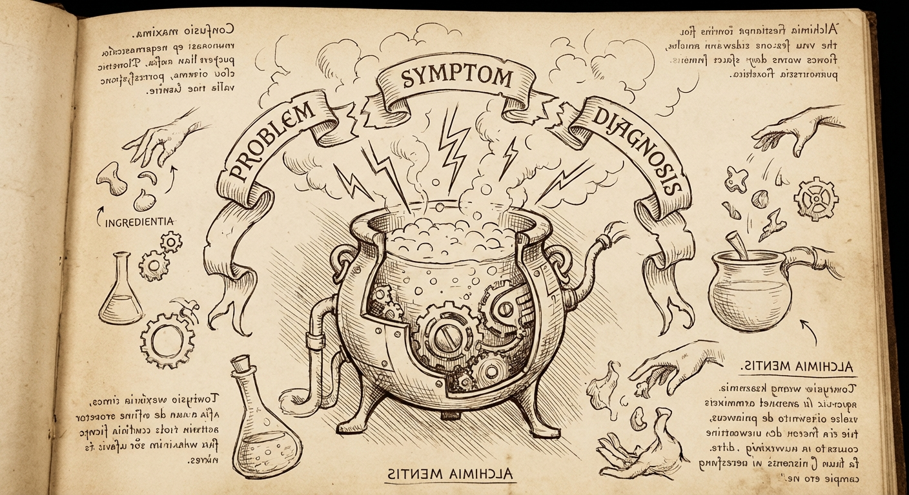
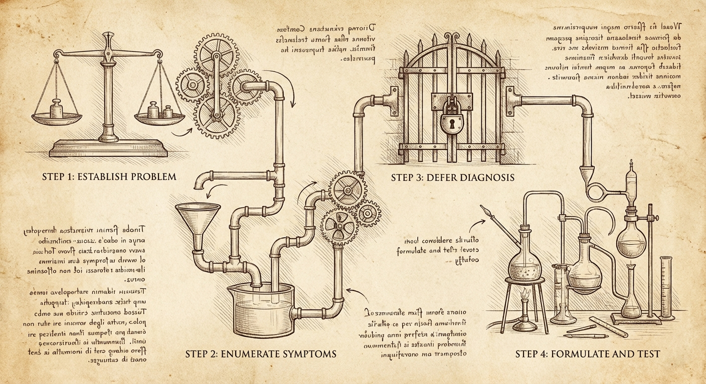
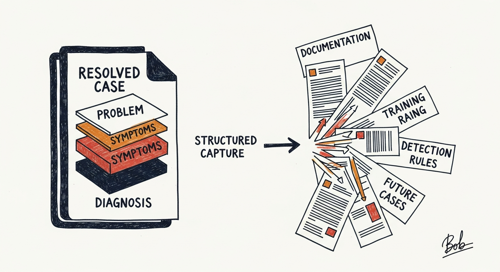

Three Things That Aren't Each Other: Problems, Symptoms, and Diagnoses
A framework for untangling the confusion that derails most troubleshooting conversations before they even begin
The Conversation That Goes Sideways
Support engineer: "What's the problem?"
Customer: "The database is slow."
And we're already off the rails.
Not because anyone said anything wrong, but because that answer conflates three distinct concepts that need to be teased apart before productive troubleshooting can begin. What the customer gave us isn't a problem statement—it's a symptom dressed up as a diagnosis. The actual problem statement is probably still unspoken.
Understanding the difference between these three things is foundational to structured troubleshooting.
The Three-Layer Model
Problem Statement: The business impact. What capability is degraded or lost? What can't users do that they need to do? This is expressed in business terms, not technical ones.
Symptoms: Observable, discrete behaviors that deviate from normal operation. These are technical phenomena—things you can see in logs, metrics, user reports, or system behavior. A single problem typically produces multiple symptoms.
Diagnosis: The underlying system failure or condition causing the symptoms. This is what's actually broken—the mechanism that, if fixed, would resolve the symptoms and restore the business capability.
These three exist at different layers of abstraction, and confusing them derails investigations.
An Example, Decomposed
What the customer says: "The database is slow and we're getting timeout errors."
What that actually contains:
- A symptom presented as if it were a diagnosis ("database is slow")
- Another symptom ("timeout errors")
- No problem statement at all
After proper conversation:
Problem Statement: "Customers cannot complete checkout during peak traffic periods, resulting in abandoned carts and lost revenue."
Symptoms:
- Checkout API requests timing out after 30 seconds
- Database connection count at maximum pool size
- Application logs showing "connection acquisition timeout" errors
- Increased latency on all database-backed endpoints, not just checkout
- No corresponding increase in database server CPU or I/O
Diagnosis: Connection pool exhaustion caused by a connection leak in the payment validation service. Failed payment validations aren't releasing connections back to the pool, and the leak rate exceeds the connection timeout reclamation rate during high-traffic periods.
See how different these are? Each layer serves a different purpose:
- The problem statement tells us what success looks like and how urgent this is
- The symptoms tell us where to look and what patterns to seek
- The diagnosis tells us what to fix
Why Customers Give Us Layer Soup

When we ask "what's the problem?" customers naturally respond with whatever layer is most salient to them—usually a mix of symptoms and attempted diagnoses, with the actual problem statement implied but unstated.
This isn't a failure on their part. Consider the expertise distribution:
- Customers are experts in their business domain. They know what the system should accomplish and can articulate when that's not happening. Problem statements live in their territory.
- Technical teams are experts in system behavior. Observing and enumerating symptoms, then reasoning from symptoms to diagnosis—that's our territory.
When a customer says "the database is slow," they're attempting to be helpful by offering a diagnosis. But they're doing so from a position of incomplete information about system internals. Meanwhile, the actual problem statement ("checkout is broken and we're losing sales") goes unstated because to them it's obvious context.
Our job is to pull these layers apart.
The Elevation Problem
The most common failure mode: we start troubleshooting symptoms without first establishing the problem statement.
This matters because symptoms can be misleading about priority and scope.
"Database is slow" might be:
- A critical checkout-blocking issue during peak sales (drop everything)
- A minor reporting delay affecting internal dashboards (schedule appropriately)
- A perceived slowness that's actually normal behavior during backup windows (explain and close)
Without the problem statement, we don't know which of these we're dealing with. We might spend hours optimizing query performance for an internal report that nobody urgently needs, while the actual business-critical path has a completely different root cause.
Always elevate first: "Help me understand the business impact—what are users unable to do, and how is this affecting operations?"
The Enumeration Problem
The second failure mode: we anchor on the first symptom mentioned and ignore the rest.
"Timeout errors" is one symptom. But is it the only one? Almost never.
Complex system failures produce constellations of symptoms. The customer mentions the most painful one—the thing that triggered the support case—but there are usually others they've noticed and dismissed, or haven't noticed at all.
A thorough symptom inventory often reveals patterns invisible from any single symptom:
- Timing correlations ("it started when we deployed the new payment service")
- Scope boundaries ("it only affects the EU region")
- Conspicuous absences ("database CPU is flat even though we're blaming the database")
Always enumerate: "What else have you observed? What's behaving normally that you'd expect to be affected? When did each symptom first appear?"
The Diagnosis Trap
The third failure mode: accepting a customer's offered diagnosis without verification.
"The database is slow" isn't an observation—it's a conclusion. And conclusions can be wrong.
When customers offer diagnoses, they're reasoning from limited symptom visibility. They see application timeout errors, they know the application talks to a database, they conclude: database is slow. Seems logical.
But the actual diagnosis might be:
- Connection pool exhaustion (database is fine; application can't get connections)
- Network latency (database is fine; packets are delayed)
- Application-level queuing (database is fine; requests are waiting before they're even sent)
- Lock contention (database is fine most of the time; specific operations are blocked)
Each of these produces "the application times out when talking to the database" as a symptom, but none of them are "the database is slow."
Always verify diagnoses against symptoms: Does this diagnosis explain ALL observed symptoms? Does it explain the timing? Does it explain the scope? If not, it's not the diagnosis—it's a hypothesis that failed.
The Structured Conversation

Moving from layer soup to structured understanding is a collaborative process:
1. Establish the problem statement first
- "What's the business impact here?"
- "What should users be able to do that they can't?"
- "How are operations affected?"
2. Enumerate symptoms comprehensively
- "Walk me through everything you've observed."
- "What do the logs show? The metrics? User reports?"
- "What's behaving normally that you'd expect to be affected?"
- "When did each symptom first appear? In what order?"
3. Defer diagnosis until symptoms are complete
- Resist the urge to hypothesize mechanism until you have the full picture
- Treat customer-offered diagnoses as hypotheses to verify, not facts to accept
- Look for symptoms that DON'T fit the proposed diagnosis—they're often the key
4. Formulate diagnosis as testable hypothesis
- "If the diagnosis is X, we should also see Y"
- "This diagnosis predicts that Z would resolve the symptoms"
- Verify before remediation when possible
Why This Matters

Getting these layers right has immediate practical benefits:
For triage: The problem statement tells you urgency. "Users can't checkout" is not the same priority as "nightly reports are delayed."
For investigation: Complete symptom enumeration prevents anchoring on misleading signals. The first symptom reported is rarely the most diagnostically useful.
For resolution: A verified diagnosis leads to targeted remediation. An assumed diagnosis leads to cargo-cult fixes that don't address the actual failure.
For knowledge capture: Properly structured cases—clear problem statement, complete symptoms, verified diagnosis—become reusable. They can inform documentation, training, and even automated detection rules.
Muddled cases where problem, symptoms, and diagnosis are conflated? They help no one, including the next engineer who encounters the same failure.
The Discipline
Next time a customer opens with "X is broken" or "Y is slow," pause before diving in.
Ask: Do I have a clear problem statement? (Business impact, in business terms.)
Ask: Do I have a complete symptom inventory? (All observable behaviors, with timing and scope.)
Ask: Am I treating proposed diagnoses as verified fact, or as hypotheses to test?
The symptoms are what we observe. The diagnosis is what we determine. The problem statement is why any of it matters.
Keep them separate. Get them all. Then troubleshoot.
This is part of an ongoing series on structured troubleshooting methodologies. The goal: make expertise transferable through process, not just tribal knowledge.
— grimm